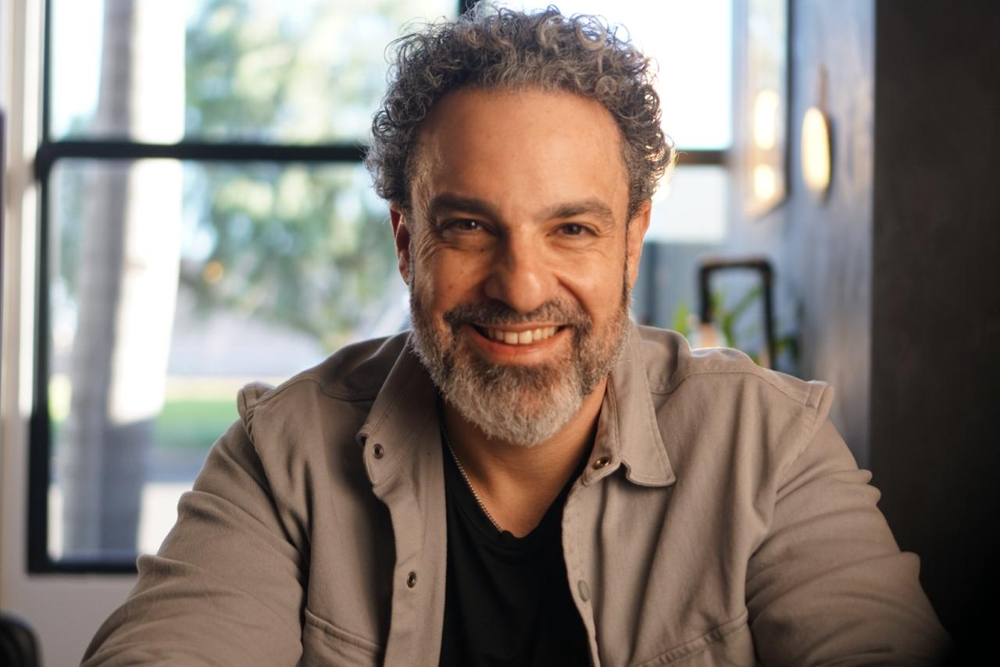

a ponte entre quem procura escuta e quem pode oferecê-la.
A Academia do Consciente é um serviço de agendamento e apoio administrativo para pessoas que buscam atendimento em psicanálise.
Cuidamos do primeiro contato. Entendemos o que você procura, apresentamos os analistas disponíveis e organizamos o agendamento.
Trabalhamos com analistas com formação em psicanálise, experiência em atendimento online e fundamentação teórica contemporânea.
o atendimento é realizado por analistas independentes: cada um responde pela própria prática, pelos próprios honorários e pela emissão da respectiva nota fiscal.
como funciona
quatro passos, sem formulário e sem cadastro.
01
Você chama no WhatsApp.
02
Conversamos sobre o que você procura, seus horários e o formato do atendimento.
03
Apresentamos o analista disponível e o valor da sessão.
04
O agendamento é confirmado. O atendimento acontece online.
Da primeira mensagem ao primeiro atendimento, o caminho costuma levar poucos dias.
para quem é
o que a gente é, e o que a gente não é.
somos
escuta psicanalítica, com analistas em supervisão contínua.
atendimento online, com hora marcada.
um processo, não uma solução rápida.
não somos
coaching, mentoria ou autoajuda.
atendimento de urgência ou emergência.
substituto de acompanhamento médico ou psiquiátrico.
Se você está em risco imediato, procure o serviço de saúde mais próximo ou ligue para o SAMU: 192.
supervisão clínica
nenhum analista trabalha sozinho.
A prática psicanalítica se sustenta na supervisão contínua. Os analistas que atendem por meio da Academia do Consciente contam com supervisão clínica disponível, individual e coletiva, conduzida por psicanalistas experientes.
A supervisão é um espaço de estudo e reflexão sobre a prática, oferecido como apoio ao analista. Ela não interfere na condução do atendimento, que permanece de responsabilidade exclusiva de cada analista, nem envolve acesso a dados identificáveis dos clientes.
supervisores
quem sustenta a prática.

psicanalista · supervisor clínico
fernando segredo.
Psicanalista, master em PNL e hipnoterapeuta. Atende exclusivamente adultos, com foco em ansiedade, burnout, bloqueios emocionais e padrões inconscientes que se repetem mesmo quando a pessoa já entendeu que se repetem.
Sua escuta articula psicanálise freudiana, psicologia analítica junguiana, PNL e hipnose ericksoniana: abordagens diferentes a serviço de uma mesma pergunta, a de por que alguém insiste naquilo que diz não querer.
Antes da clínica, foram 18 anos em agências de publicidade, um dos mercados mais exigentes e mais ansiosos que existem: prazo curto, cobrança permanente, valor medido pela última entrega. Ele viveu isso de dentro, e leva para o consultório a compreensão de quem conhece por experiência própria o ambiente onde o burnout costuma nascer.
Sustenta que consciência não é conforto. É o que devolve à pessoa o direito de ser autora da própria história, inclusive das partes que ela ainda não quis olhar.
Psicanalista clínico com mais de 12 anos de experiência, professor em curso de formação em psicanálise e supervisor de terapeutas em atuação. Especialista em técnicas de acesso direto ao inconsciente, trabalha com um processo estruturado e acolhedor: existe pessoa antes de existir caso, e cada uma chega com dores singulares.
Atende adultos e casais em questões de estresse, ansiedade, angústia, tristeza, excesso de controle, problemas de relacionamento e bloqueios emocionais.
Antes da clínica, foram mais de 23 anos como gestor de projetos em grandes multinacionais. Essa passagem permite conversar com executivos e líderes na linguagem do mundo dos negócios, entendendo como essa rotina atravessa a vida profissional e a pessoal.
Para ele, a análise é o lugar de compreender o que ainda não se sabe de si e traduzir em palavras aquilo que é sentimento, para ampliar a consciência sobre as próprias escolhas. Quando a lógica não dá conta do peso emocional, o primeiro passo é falar e se escutar. Agir vem depois.
atendimento
online, com hora marcada.
Todo o atendimento é realizado online, mediante agendamento prévio. Não realizamos atendimento presencial e não atendemos situações de urgência ou emergência.
dúvidas
o que costumam perguntar.
quanto custa uma sessão?
O valor é definido por cada analista. Informamos antes de qualquer agendamento, no primeiro contato pelo WhatsApp.
quanto tempo dura uma sessão?
50 minutos.
com que frequência acontecem os atendimentos?
Semanal ou quinzenal, conforme o combinado entre você e o analista.
como escolho o analista?
Você não escolhe sozinho e não escolhe às cegas. A partir da conversa inicial, apresentamos o analista com disponibilidade e perfil compatíveis com o que você procura.
posso trocar de analista?
Pode. É só falar com a gente.
psicanálise é a mesma coisa que terapia?
São coisas próximas, mas não idênticas. "Terapia" é um nome amplo, que cobre abordagens diferentes. A psicanálise é uma delas, e o que a distingue é o método: em vez de técnicas e tarefas, ela trabalha com a sua fala e com o que ela revela sem que você perceba. Por isso não existe um número de sessões definido. O processo tem o tempo de cada um.
vocês têm acesso ao que eu falo nas sessões?
Não. O que é dito no atendimento fica entre você e o analista. Cuidamos apenas do agendamento.
emitem nota fiscal?
A nota fiscal é emitida pelo analista que realiza o atendimento.
atendem plano de saúde?
Não. O atendimento é particular.
a consciência ilumina parte. o resto continua sendo trabalhado.